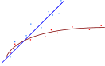

CS3460: Data Structures
Big O Notation
CS3460: Data Structures & Algorithms
Measuring Runtimes: Big O / Asymptotic Notation
Measuring Runtimes
Could do empirical performance testing.
Measuring Runtimes
Could do empirical performance testing.
- Different inputs make a huge difference
- Do you want to measure worst-case? Average case?
Asymptotic Notation
- Linear search: $O(n)$
- Binary search: $O(\lg n)$
Asymptotic Notation
- What does $O(f(N))$ mean?
- Runtime is exactly $f(n)$? No.
- Upper-bounded by $f(n)$? No.
- Upper-bounded by $c \times f(n)$? Close.
- Upper-bounded by $c \times f(n)$ as $n\to\infty$
Asymptotic Notation
- Provides an upper-bound on running time, ignoring multiplicative factors, constant factors, and lower-order terms.
- Captures what really matters regarding algorithm performance: How does worst-case performance scale with input size?
Asymptotic Notation
- There's more than just Big O notation
- $O(f(n))$ is an upper-bound (≤)
- $\Omega(f(n))$ is a lower-bound (≥)
- $\Theta(f(n))$ is upper-bound and lower-bound (=)
Running Times
Why do we almost always focus on worst-case runtime?
Running Times
| Constant | $O(1)$ |
| Logarithmic | $O(\lg n)$ |
| Linear | $O(n)$ |
| Polynomial | $O(n^2)$, $O(n^3)$, $O(n^{100})$, ... |
| 😐 Exponential | $O(2^n)$, $O(3^n)$, ... |
| ☹️ Worse | $O(n!)$, $O(n^n)$, $O(\alpha(n))$, ... |
Running Times
- Why don't we write the base of the logarithm?
- Yes, but why don't they matter?
- Converting between bases is just multiplying by a constant ($\lg_a n = \lg_a b \times \lg_b n$)
- Usually $\lg n$ means $\lg_2 n$
Fundamental Data Structures
Arrays
Linked Lists

Arrays
// In Java, arrays are dynamically allocated in contiguous
// memory. Arrays are Objects and take O(n) to allocate.
// Array contents are accessed with zero-indexing.
int[] a = new int[5];
// Valid indices for the above array are 0 through 4.
a[4] = 0;
Fundamental Data Structures
Arrays
Linked Lists
Linked Lists
public class LinkedList<T>
{
public class Node<T>
{
public Node<T> next;
public T data;
}
public Node<T> head;
}
There are many variations on how to setup linked lists: additional pointers, doubly-linked lists, and dummy nodes
Linked List Variations
Doubly-Linked Lists
Dummy Nodes
Array vs Linked List Performance
- Retrieve or update any element: $O(1)$
- Insert or remove from middle of list: $O(n)$
- Insert or delete from ends of list: $O(1)$
Consider using a circular array to avoid overrunning array bounds
Array vs Linked List Performance
- Seek to position in list: $O(n)$
- then insert/delete element: $O(1)$
- Insert or delete from ends: $O(1)$
Abstract Data Types (ADTs)
- A specification of a data structure is a list of the operations it needs to support
- This will end up being the public interface for the implementation of the data structure
- An implementation is a concrete representation of the data structure that fulfills the requirements of the specification, either logically or in code
Example ADT: Dynamic Sequence
Specification
insert(x,i)- insert the object $x$ at position $i$ in the sequence.remove(i)- remove the object at position $i$.access(i)- access the object at position $i$.modify(i,v)- update the object position $i$ to the value $v$.
Implementation
- How do we implement this?
Applications of Sequences
- Email inbox, contacts, chats, and calendar
- Social media posts, comments, and notifications
- Your Java code and bytecode
- Web URLs and bookmarks
- Media files, images, audio, videos
- Finance: bank transactions, stock market
- Biology: genomic sequences, EKG data, EEG data
Sequences: BigInteger
- Store digits of an integer as a sequence
- Can store extremely large numbers
- Can even store fixed-point numbers!
- Storing digits in reverse simplifies arithmetic operations
- Can use array for storage, but linked list is better